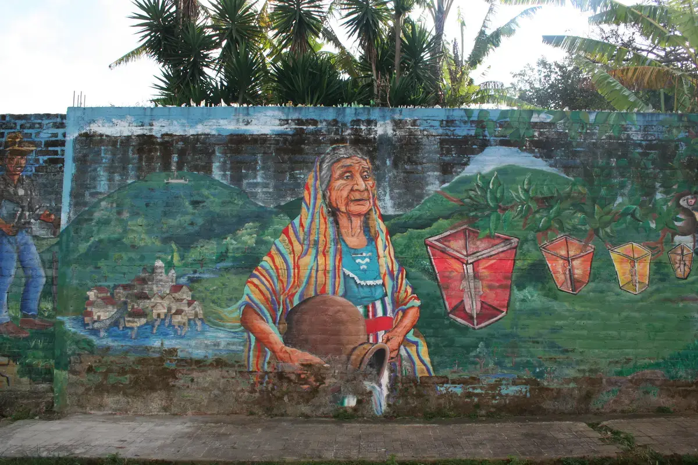
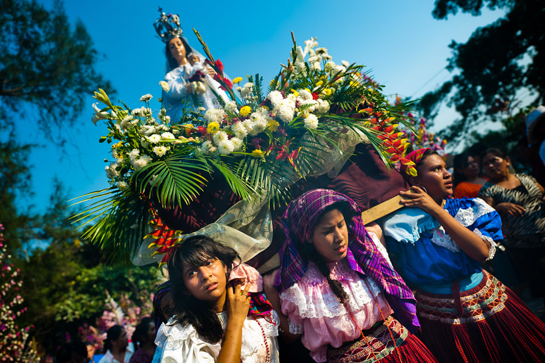

Ruta del Color
Pincel
Cada mural es una voz. Camina por las calles que cuentan historias pintadas por manos locales, reflejo de la identidad salvadoreña.

Activa AR para ver murales interactivos en tu entorno.
Ruta de la Fe
Palmas
Entre rezos y flores, la fe viva se expresa en cada procesión, en cada palma tejida, en cada velo de comunidad. Panchimalco es fe viva.

Experiencia AR: Participa virtualmente en procesiones.
Ruta Gastronómica
Comida
Sabores de antaño, cocinas que narran la historia. Degusta los tamales, el atol y las frutas locales que dan sabor a nuestra cultura.

AR para recetas interactivas y visualización de platos.
Ruta del Arte Vivo
Arte
Pintores, escultores y músicos comparten su talento en talleres abiertos. Ven a vivir la inspiración desde sus propias manos.

Explora talleres en AR para interactuar con artistas virtuales.